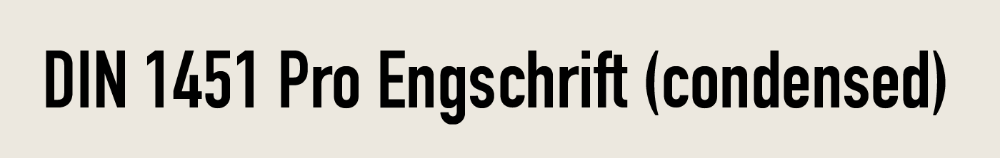
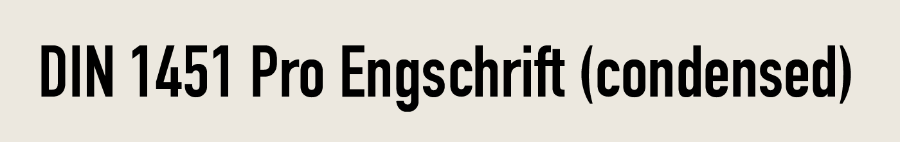

History
DIN's origin is written in its name - Deutsches Institut für Normung, which means the German Institute of Standardization. As the name indicates, the typeface was created to normalize the public text of Germany in the early 1900s, in transportation specifically.
Origin
The earliest DIN type could be traced back to 1905, where it was first developed as the signage to mark all the freights by the Prussian Railway Administration. This stablished the key characteristic of the typeface - clear and directional. But it was till 1931, with strong refining, when DIN 1451 was published by Germany started to be used in all the transportation signages, such as traffic signs, street signs, house number, etc.


Characteristics
The original DIN 1451 comes with 3 flavors: Engschrift (condensed), Mittelschrift (regular), and Breitschrift (extended). In first glance, the typeface emits a very serious and official tone, a since of authority and direction. With closer inspection, what stands out is that even though being a “industrial” typeface, most of the round letter stays in its true form. Moreover, compare to more modern san-serif, DIN retains the tilted 45 degree angle for the stem of the “t”, and surprisingly using the angular jot for “I” and “j”. But the firmness of DIN's capital letter ultimately sets the serious tone for the typeface.
 

Evolution
Today, we are more likely to see the evolved FF DIN (or URW DIN), which was the remaster version of the classic DIN, by Alber-Jan Pool, a German artist at the URW Foundry. FF DIN tones down the seriousness and make DIN more suitable for the modern use. The x height is shorter, the tilted t is gone, and the lower case is squarer, making the lettering a little more approachable, yet trading off some of its original soul. In return, we can find DIN more in our daily life as well.